Antes de empezar
Este manual describe los pasos que siguió el Equipo 3 en la consola de AWS para que la carga de una imagen en S3 active la función que guarda la noticia, y para vigilar esa función con logs, una métrica y una alarma. La arquitectura y las decisiones de diseño se explican en la ficha técnica.
- Región: us-east-2 (Ohio). Todos los recursos deben estar en la misma región.
- Recursos existentes: el bucket
mis-noticias-daniel-imagenes-906-2026, la tablanoticiasy las funcionescors,agregarNoticiayobtenerNoticias. - Código: la carpeta
codigo/de los entregables contiene las funciones y la política IAM.
Preparar la función de prefirmadas
Antes de cambiarla, se respaldó el código de la función cors. Después se reemplazó por la versión nueva, que recibe los datos de la noticia, los guarda en pendientes/ID.json y devuelve la URL para subir la imagen a imagenes/ID/foto.ext. La versión nueva conserva el modo anterior para no afectar a quien tenga la página antigua en caché.
Crear la función procesadora
- En Lambda › Crear función, crear
procesar-imagen-noticiacon Node.js 24.x. - Pegar el código de
procesar-imagen.mjsy pulsar Deploy. - En Configuración general, subir el tiempo de espera a 30 segundos.
- En Variables de entorno, agregar
TABLAyBUCKET(figura 1).
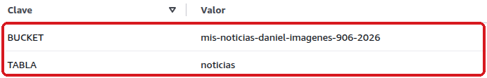
TABLA permite simular un fallo sin tocar la tabla real.Conectar S3 con la función
- En la procesadora, pulsar Agregar desencadenador › S3.
- Elegir el bucket de imágenes, el tipo Todos los eventos de creación de objetos y el prefijo
imagenes/. - Aceptar el aviso de invocación recursiva: no hay ciclo, porque la función no escribe en S3.
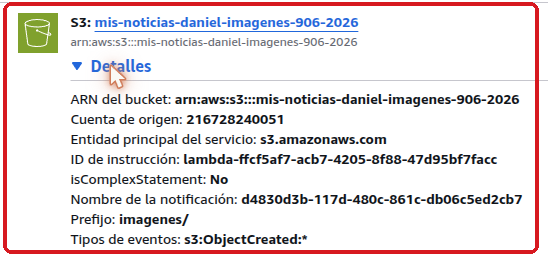
imagenes/ y evento s3:ObjectCreated:*.Lambda crea por sí sola el permiso para que S3 invoque la función. La regla también aparece en las propiedades del bucket (figura 3).
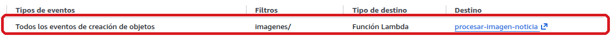
Actualizar la consulta y el sitio
Se reemplazó el código de obtenerNoticias para que también responda la consulta ?id= con el estado pendiente o publicada. Después se subió el nuevo main.js al bucket del sitio y se cambió su número de versión en index.html; sin ese cambio, el navegador seguía usando el archivo anterior guardado en caché.
Configurar los reintentos
En Configuración › Invocación asíncrona se fijaron dos reintentos y una antigüedad máxima del evento de una hora.
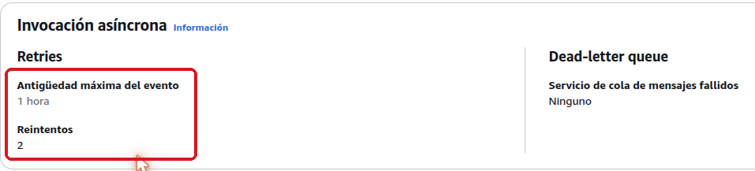
Configurar la retención de logs
En CloudWatch › Grupos de registros, se abrió /aws/lambda/procesar-imagen-noticia y en Acciones › Editar configuración de retención se eligieron tres días.
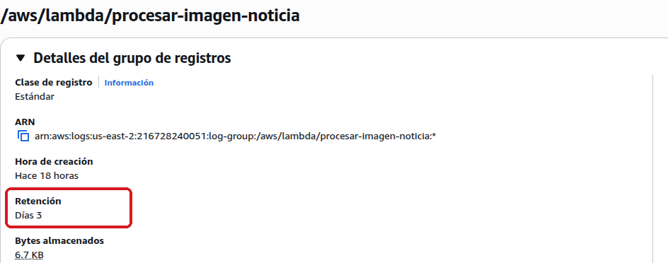
Crear la alarma
- En CloudWatch › Alarmas › Crear alarma, elegir la métrica
Errorsde la funciónprocesar-imagen-noticia. - Configurar la condición: suma mayor o igual que 1 en un periodo de 1 minuto, con 1 de 1 puntos de datos.
- Tratar los datos faltantes como correctos, no agregar acciones y nombrarla
gaceta-procesadora-errores.
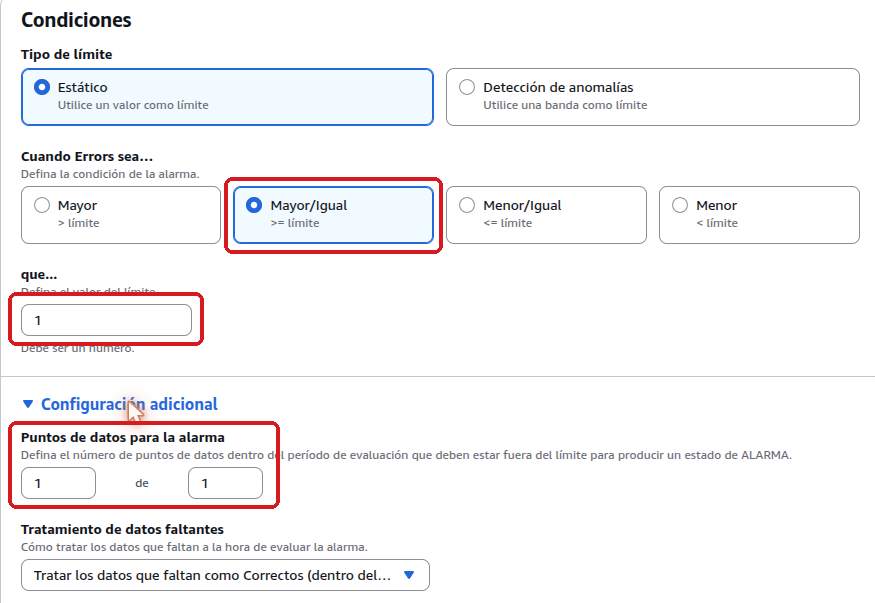
Asignar un rol de mínimo privilegio
- En IAM › Roles › Crear rol, elegir Lambda como servicio de confianza, sin políticas administradas.
- Nombrarlo
procesar-imagen-noticia-roly agregar las etiquetas del proyecto. - En Agregar permisos › Crear política insertada › JSON, pegar
procesadora-politica.json. El validador debe mostrar cero problemas (figura 7). - En la procesadora, en Configuración general › Editar, cambiar el rol de ejecución por el nuevo.
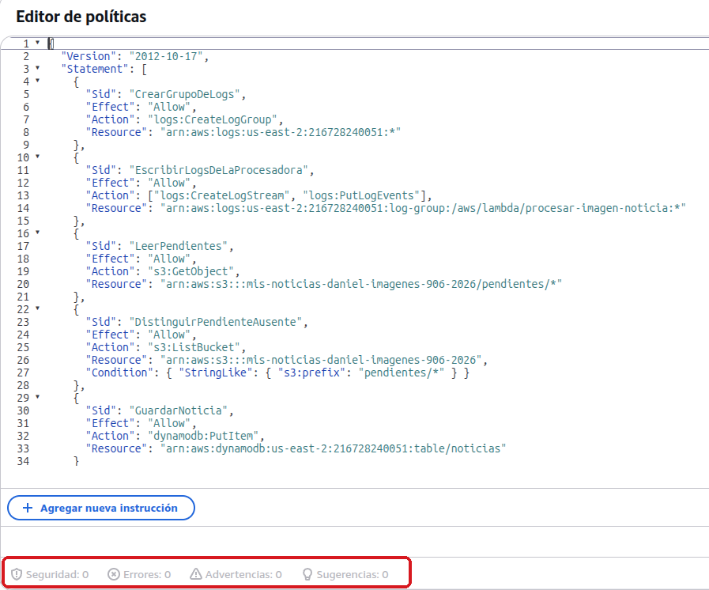
pendientes/ y escritura en la tabla.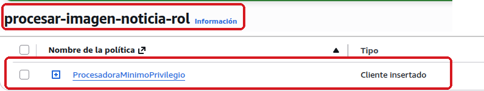
ProcesadoraMinimoPrivilegio como único permiso.Verificación
Con todo configurado, el 27 de octubre de 2026 fuimos comprobando el flujo paso a paso: primero en condiciones normales y después provocando fallos a propósito. Usamos el sitio publicado y la pestaña Probar de la procesadora, con los eventos de ejemplo de la carpeta pruebas/ del repositorio.
Publicación de una noticia
Lo primero fue publicar una noticia con imagen desde el sitio, como lo haría cualquier usuario. En la red del navegador ya no apareció ninguna llamada a agregarNoticia, y en los logs se ven las tres etapas del procesamiento.
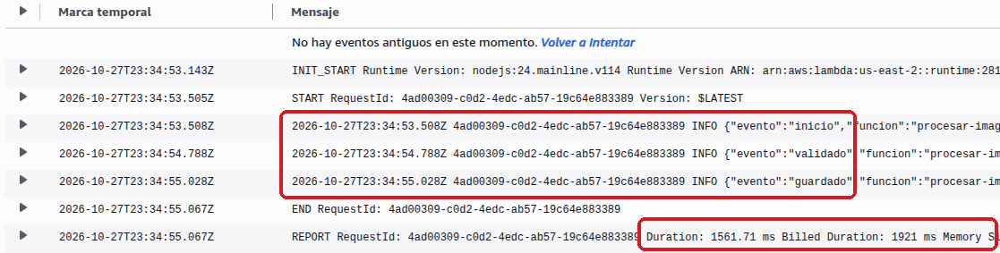
inicio, validado y guardado, en 1.56 segundos.Al revisar la tabla, la noticia estaba ahí, y al recargar el sitio aparecía con su imagen.
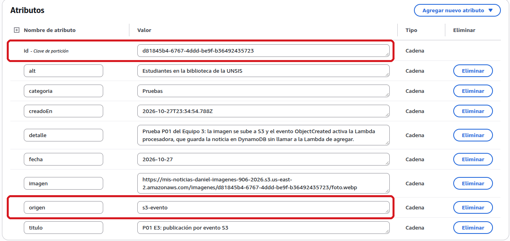
origen = s3-evento indica que la guardó la procesadora.Una imagen sin datos
Después quisimos ver qué pasa si llega una imagen cuyos datos no existen. Enviamos ese evento y la función registró validacion_fallida con el motivo y terminó sin error, porque reintentar no lo corregiría. No se creó ninguna noticia incompleta.
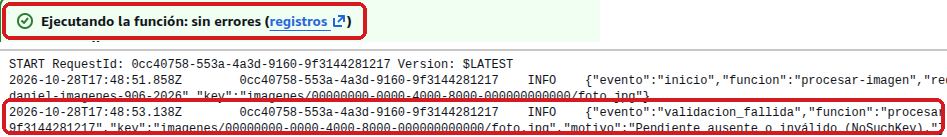
Una caída de la base de datos
El caso más importante era un fallo al guardar. Para simularlo sin dañar la tabla del grupo, cambiamos la variable TABLA por una tabla inexistente y publicamos una noticia. La función falló tres veces con el mismo identificador de solicitud: el intento original y los dos reintentos. Al restaurar TABLA = noticias y reprocesar el evento, la noticia se guardó con el mismo id.
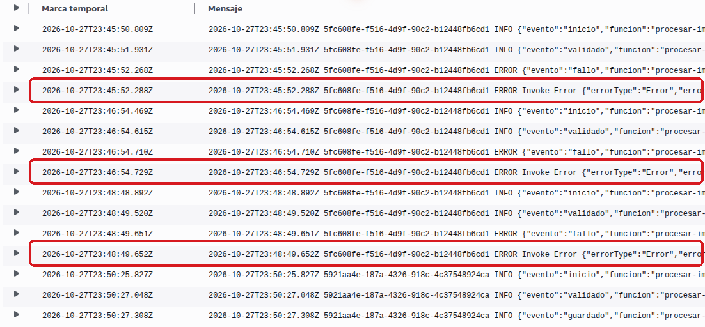
ResourceNotFoundException a las 23:45, 23:46 y 23:48 UTC.La métrica y la alarma
Ese mismo fallo nos sirvió para comprobar la vigilancia. La métrica Errors registró el pico y la alarma se encendió a las 23:46:42; al corregir la tabla volvió a la normalidad a las 23:51:42.
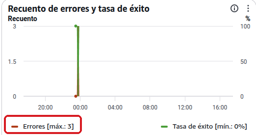
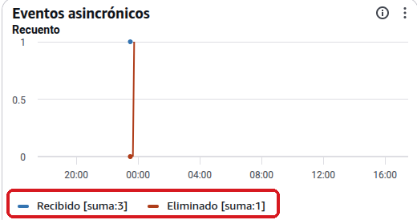
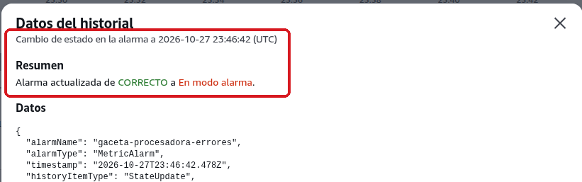
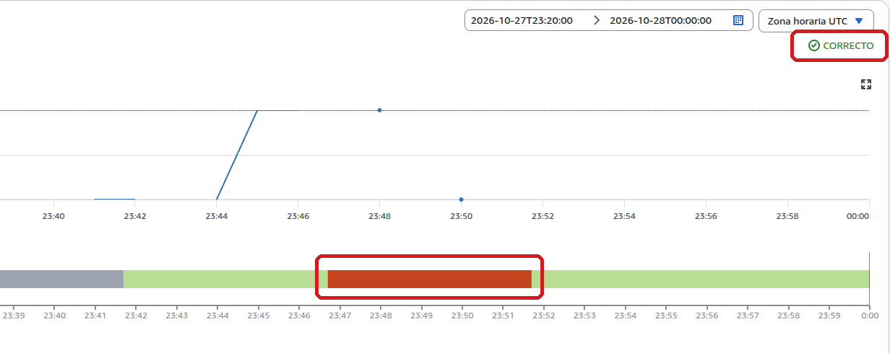
Un evento repetido
S3 puede entregar el mismo evento más de una vez, así que volvimos a enviar el de la primera publicación. La función registró duplicado y la tabla conservó un solo registro.
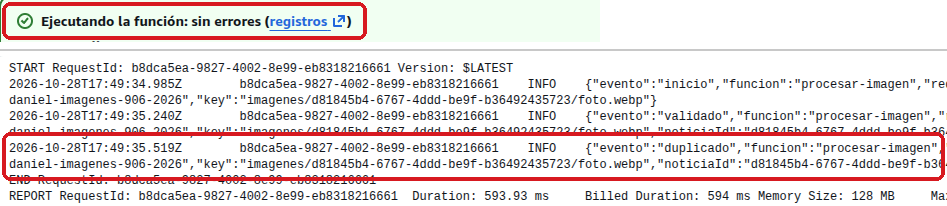
duplicado para la misma noticia.Un procesamiento lento
Por último, revisamos qué veía el usuario mientras la base de datos estaba caída. La web consultó el estado diez veces y avisó que la noticia seguía en procesamiento, sin volver a enviarla. Tras la recuperación apareció una sola vez.
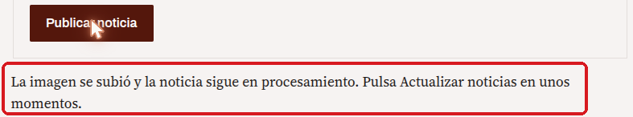
Consumo y limpieza
El saldo fue de 120.00 USD antes y después de la verificación, sin gasto en el mes.
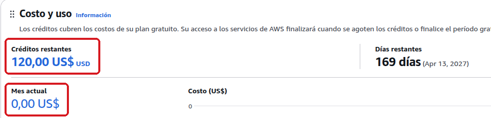
Al terminar el curso, eliminar los recursos en este orden:
- El desencadenador de S3 de la procesadora.
- La función
procesar-imagen-noticiay su rol. - La alarma
gaceta-procesadora-errores. - El grupo de logs
/aws/lambda/procesar-imagen-noticia. - Los objetos de
pendientes/, las imágenes de prueba y las noticias de prueba de la tabla.
Si el sitio sigue en uso, antes se restaura en cors el código original (prefirmadas-original.mjs).